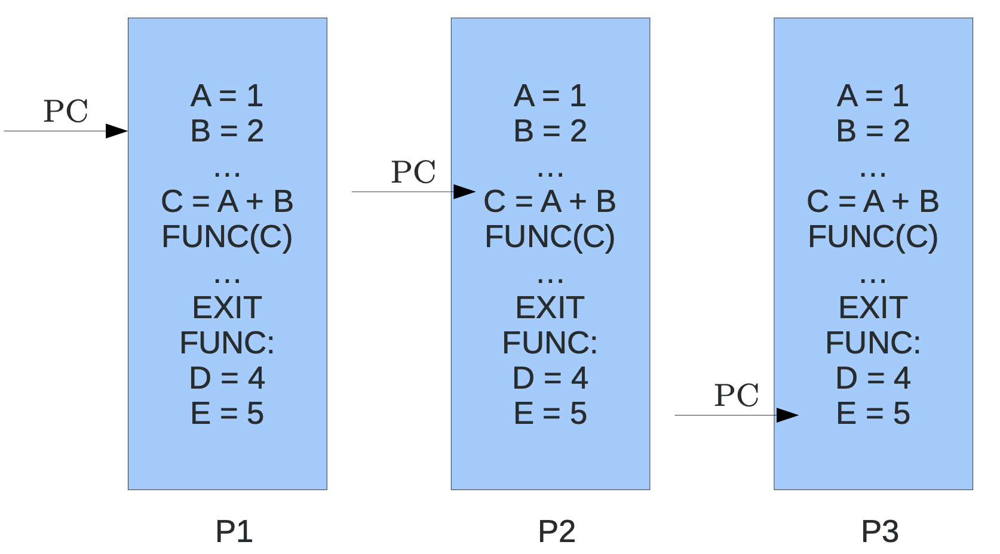
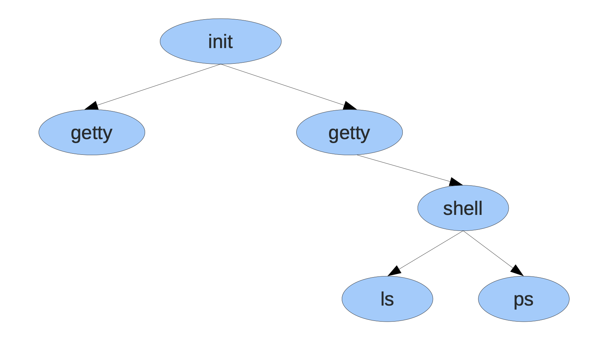
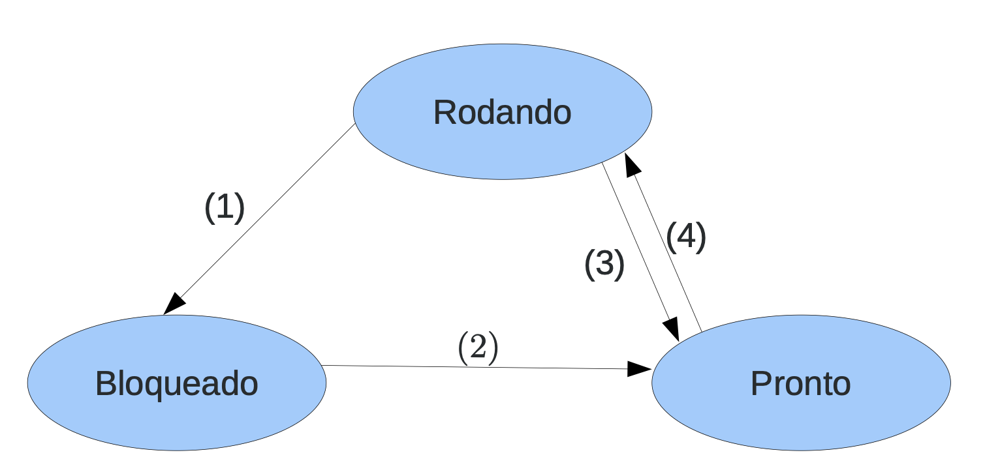
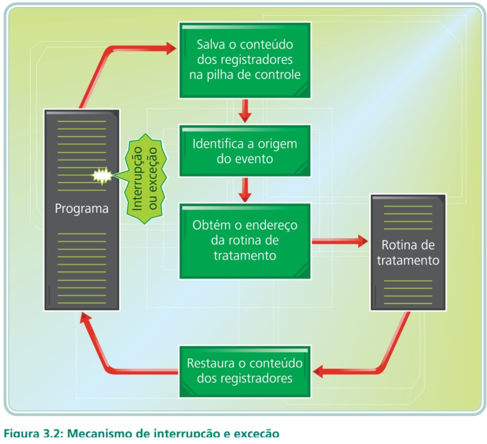
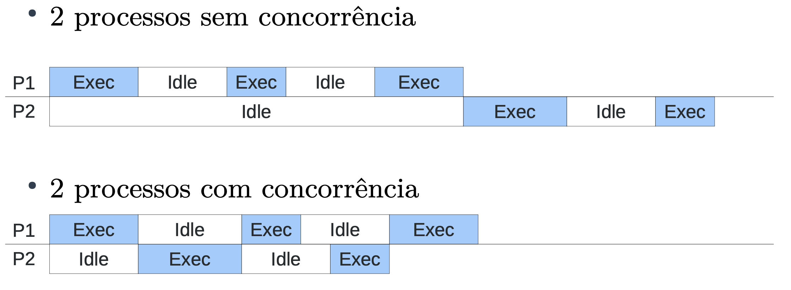

Processos
Modelo de processo
-
Conceito: É um programa em execução acompanhando de valores de tempo de execução
-
Processo:
- Código executável
- Valores de variáveis locais
- Registradores
- Contador de programa (indica a próxima tarefa a ser executada)
-
Diferença de processo e programa: Programa é receita de bolo, processo é o ato de fazer o bolo.
- Programa é uma série de passos a ser executado
- Processo é a execução desses passos
-
Um processo pode ser dividido em: Ambiente e Execução
-
Machado e Maia dividem em 3 partes, Espaço de endereçamento, contexto de software e contexto de hardware:
- Execução: Contexto de Hardware
- Ambiente: Espaço de endereçamento + Contexto de software
Classificação de processo
Classificação dos modelos de processos quanto ao custo de troca de contextos e de manutenção
- Heavyweight (Processo tradicional)
- Lightwheight (threads)
Heavyweight (Processo Tradicional)
- Processo composto tanto pelo ambiente como pela execução
- Cada processo possui um único fluxo de controle (contador de programa) e roda de forma independente
- Em um determinado instante, há vários processos ativos ao mesmo tempo, o processador é chaveado entre diversos processos

Lightwheight (threads)
Criação de processos
- Sistemas de um único propósito possuem um esquema mais simples e previsível de processos em execução
- Os processos são criados:
- Ínicio do sistema
- Execução de uma chamada ao sistema de criação de processo em execução
- Requisição do usuário
- Ínicio de um job de lote
- Alguns executam em primeiro plano e interagem com usuários
- Outros executam em segundo plano: chamados de daemons
- Normalmente os processos são criados por outro.
- Em alguns sistemas, é possível listar o ppid (parent pid)
- Todos os processos são filhos ou descendentes do processo init
- Windows não apresenta hierarquia de processos
Hierarquia da árvore

Condiçoes de término de processo
- Sáida normal (voluntária)
- Saída por erro (voluntária)
- Erro fatal (involuntário)
- Cancelamento por outro processo (involuntário)
Estados de processos
- Apesar de processos serem autossuficientes, muitas vezes necessitam acessar recursos ou comunicar com um processo
-
Quando um processo espera um evento, dizemos que esta bloqueado
- Leitura em disco
- Leitura de rede
- Esperando entrada do usuário
-
Os processos podem estar:
- Rodando
- Bloqueado
- Pronto

- (1) O processo bloqueia-se aguardando uma entrada
- (2) O evento aguardado pelo processo ocorreu, pode-se iniciar a executar.
- (3) O tempo de posse do processador esgotou-se
- (4) O processo é escolhido pelo escalonador para executar
CPU Bound e I/O Bound
- CPU Bound possuem maior afinidade com o procesasdor, e passam a maior parte do tempo em estado rodando, já o I/O Bound possuem afinidade a entrada e saída, passam a maior parte do tempo em bloquado.
Implementação de processos
- TROCA DE CONTEXTO : Operação básica da multiprogramação, é uma operação de salvamento dos registradores de um processo, para posteriormente restaurar esses regsitradroes, para que esse processo continue a execução como se não tivesse parado

Escalonamento de Processos
O algortimo de escalonameto é o que vai definir qual processo vai rodar e por quanto tempo.
- A parte do S.O que faz isso é chamado de escalonador

Daí surge a multiprogramação. Os escalonadores podem ser classificados em:
Preemptivos: Quando faz a suspensão temporaria de um processo, quando possui a capacidade de tirar a força da CPU.
Não-Preemptivos: Quando o processo chega a CPU, ele executa até o fim, não possui a capacidade de tirar a força da CPU.
- Cada processo possui um tempo limitado no processador (time-slice)
- Os escalonadores não-preemptivos são de projetos mais simples, não confiáveis pois podem abusar do tempo limite da CPU. Isso viola bons critérios de um bom escalonador, justiça, tempo, etc.
- Escalonadores preemptivos asseguram um uso mais balanceado da CPU, por isso, são usados em maioria pelos S.O.
- Tais projetos podem possuir deficiência em processos concorrentes, devido a complexidade.
Ao projetar um escalonador deve-se levar em consideração:
- Justiça: Um bom escalondaro deve ser justo, todos os processos devem ter uma chance justa de usar o processador
- Eficiência: Quando houver um trabalho a fazer o processador deve estar ocupado
- Minimizar o tempo de resposta: Reduzir o tempo dos usuários interativos, quando se há diferente tipos de processos rodando na máquina.
- Minimizar o turnaround: Reduzir o tempo de processo até o seu término. Soma de tempo de espera por recursos.
- Minimizar tempo de espera: Visa minimizar o tempo de esepra pela CPU
- Maximisar throughtput: Maximizar o número de tarefas executadas por uma unidade de tempo
Não é possível atingir todos esses critérios com maestria em um algoritmo, é necessário uma lista de prioridade.
- Algoritmos clássicos de escalonamento:
- Fist Come First Server
- Round-Robin: Alternância circular, cada um vai usar um pouco
- Prioridades
- Shortest Job First
First Come First Served
O processo obtido pela CPU de acordo com a ordem de chegada, é do tipo não-preemptivos, assim o processo obtem a CPU por um tempo inderteminado.
- Vantagens:
- Simples de implementar
- Algoritmo eficiente, CPU sempre utilizada
-
Desvantagens:
- Impossiblidade de prever quando um processo vai iniciar
- Tempo médio de processo não é respeitado
- Tempo de espera = Tempo de serviço - Tempo de chegada
-
Justiça: Não. Um processo pode monopolizar
- Eficiência: OK. A CPU sempre é utilizada, se existe trabalho
- Minimizar o tempo de resposta: Não. Caso um processo monopolize
- Minimizar o turnaround: Tarefas longas sendo executadas primeiro, aumenta turnaround (Ver exemplo do SJF a frente)
- Minimizar waiting time: O tempo de espera não é considerado durante o escalonamento
- Maximizar throughtput: Se a primeira tarefa for longa, o tempo de término fica alta
Round-Robin: Alternância circular, cada um vai usar um pouco
Cada processo tem o direito de usar o processador por um intervalo de tempo pre-definido.
- É uma dificuldade escolher o tempo do quantum, o tempo de execução, pois devo esperar um tempo maior que o tempo da troca de contexto, o tempo de resposta desejado.
- O tempo de quantum padrão é de 100ms
- Quantum muito longo, se torna um FCFS
- Quantum muito curto, perde vários requisitos, por exemplo eficiêcia
Prioridades
Baseia-se no fato que alguns processos são prioritários e devem ser executados antes dos outros. Muito importante em Sistemas operacionais em tempo real. Cada processo é atribuido uma prioridade. - Podem ser atribuidas de 2 formas: - Estática: Processos são divididos em classes e a cada classe é atribuida uma prioridade, a cada prioridade existe uma fila de prontos associadas - Dinâmica: O sistema analisa o comportamento dos processos e atribui prioridades favorecendo um certo tipo de comportamento. Processos I/O devem possui uma prioridade alta. - Prioridade dinâmica: 1/f, onde f é a fração do quantum de tempo de usada na última rodada do processo
Shortest Job First
Algoritmo projetado para sistemas em lote, com objetivo de reduzir o tempo de turnaround (tempo de lançamento do processo até seu término). Entretando, requer que o tempo de execução de um processo seja conhecido antes de seu início.
-
Possui aplicação para sistemas interativos
-
Desvantagens:
- Como determinar o tempo de execução do comando
- Probelma da parada é indecidível
- Necessário combinar técnincas para estimar valores baseados em execuções anteriores (aning)
Escalonamento em dois níveis
Quando quero usar dois casos de escalonamento, um caso típico de escalomanento em dois níveis é o a;goritmo que considera tanto os processos que estão em memória como os processos que estão em disco